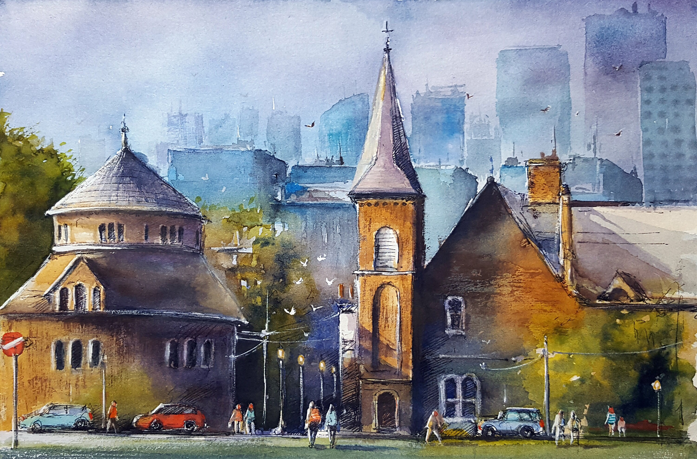

Honours B.Sc. in Psychology from the University of Toronto Mississauga. Lead Research Assistant at the Regulatory and Affective Dynamics Lab and the Chung Lab, focusing on emotion regulation, personality, well-being, and preference-based interventions.
About Me
Hello, I'm Rose Amir Pour
I bring curiosity, dedication, and a collaborative spirit to every research project. As a Research Assistant at both the Regulatory and Affective Dynamics Lab (Dr. Norman Farb) and the Chung Lab (Dr. Joanne Chung) at UTM, I conduct research on interoception, emotion regulation, personality development, and student well-being. I'm passionate about mentorship, crisis support, and making research accessible to broader audiences through knowledge mobilization.
Scoping Review RA, Chung Lab
Skills & Methods
Research

Validation of the Interoceptive Change Awareness Task
Lead RA on a SSHRC-funded ($7,500) project examining breath awareness and interoception. Expertise in BIOPAC physiological assessment, team supervision of 6 volunteers, and manuscript preparation.
Personality Development Among Racialized University Students
Leading a collaborative scoping review on personality development, social experiences, and well-being among racialized students. Coordinating 6 graduate students and RAs using Covidence, following PRISMA-ScR guidelines.
The Role of Choice in Self-Regulation & Well-being
Investigated the impact of online wellness interventions (mindfulness, journaling, paced breathing, nature videos) and preference on 161 undergraduates' stress and well-being. Designed experimental study via Qualtrics, prepared ethics application, and defended orally.
Giving Voice: Identity, Emotion & Well-being of Racialized Students
Contributed to a longitudinal community-engaged study on racialized students' experiences. Led participant recruitment via social media, organized Exam Jam wellness events, and presented at multiple research fairs.
Community Involvement
Committed to giving back through crisis intervention, peer mentorship, academic support, and community outreach across campus and beyond.
Canada
FVB Psychologists Clinical Intern
Clinical intern at FVB Psychologists supporting psychological intake, assessments, and evidence-based treatment planning. Contributed to knowledge mobilization through blog writing and outreach, and participated in case conferences and peer supervision.
Crisis Responder
Volunteer crisis responder at Distress Centres of Greater Toronto and Kids Help Phone, providing real-time emotional support and risk assessments to 100+ individuals in acute distress.
7 Cups Active Listener
Confidential emotional support provider on 7 Cups, offering empathetic listening and coping strategies to 100+ people worldwide dealing with anxiety, depression, and life challenges.
PAUSE Peer Mentorship
Mentor in the Psychology Association of Undergraduate Students (PAUSE) program, guiding 2 psychology students through academic planning, research opportunities, and professional development.
Research Mentorship
Supervised and trained 10+ undergraduate research assistants across the Research Opportunity Program, Work-Study Program, and volunteer positions in research methodology, data collection, and literature review.
Facilitated Study Groups
Led weekly facilitated study group sessions for PSY240 (Abnormal Psychology) and PSY100 (Introductory Psychology). Collaborated with co-facilitators to help students master course topics and actively engage in discussions.
Exam Jam Wellness Events
Organized and facilitated Exam Jam wellness activities including gratitude card making, clay sculptures, and bookmark crafting to support student well-being during exam periods.
Community Outreach
Organized and participated in community engagement events to make psychology research accessible to the public, bridging the gap between academic findings and everyday well-being practices.
Orientation Volunteer
Volunteered at UTM's orientation to welcome over 1,000 first-year students, helping them navigate campus buildings and services. Received a Certificate of Achievement for commitment, enthusiasm, and meaningful impact to the community.
Iran
Child & Youth Support Volunteer
Provided daily caregiving support to over 200 children and adolescents. Facilitated storytelling, arts and crafts, and play therapy to encourage self-expression and resilience. Supported adolescents with homework and literacy development using trauma-informed practices.
Help Line Responder
Provided crisis intervention and compassionate emotional support in both Persian and English to over 150 callers and families experiencing distress. Assessed risk levels, followed de-escalation protocols, and offered referrals to community mental health resources. Collaborated with psychologists and educators.
Childcare & Program Support Volunteer
Engaged with over 200 children and adolescents in one-on-one and group activities. Assisted with cultural and holiday events, supported children with reading and educational games in Persian, and learned best practices in youth care.
Knowledge Mobilization
Making research accessible and impactful beyond the walls of academia through social media, community events, and public engagement.
Social Media & Content Creation
Created and managed social media content for the Chung Lab (@chunglab.utm), including reels, info cards, and graphics to promote research, recruit participants, and engage the UTM community.
Community Events
Organized Exam Jam wellness events, represented the Wellness Map Project at the UTM Be Well Fair, and presented at Black History Month and PAUSE community events.
Presentations & Panels
Delivered oral and poster presentations at the CPA Conference 2026, UTM Thesis Day, and research showcases. Contributed to panels on undergraduate research and building inclusive private practice.
Academics
Honours B.Sc. with a Specialist in Psychology and Minor in Education Studies from the University of Toronto Mississauga. Cumulative GPA: 3.82/4.0.
Awards & Recognition
Dean's List
Awarded annually for maintaining a GPA of 3.5 or above at the University of Toronto Mississauga.
UTEA Scholarship
University of Toronto Excellence Award ($7,500 CAD) funded by SSHRC and the University of Toronto, recognizing academic achievement and research potential.
Entrance Scholarship
Merit-based entrance scholarship ($3,000 CAD) upon admission to the University of Toronto Mississauga.
Undergraduate Research Award
Recognized for outstanding independent research conducted as part of the Honours Thesis program in Psychology.
Coursework
PSY240 - Intro to Abnormal Psychology
Explored the causes, diagnosis, and treatment of psychological disorders. Built a foundational understanding of clinical frameworks and ethical considerations in mental health.
PSY309 - Experimental Design & Theory
Learned to critically evaluate research designs, formulate hypotheses, and plan analyses. Gained skills in presenting research in a conference-style setting.
PSY333 - Health Psychology
Studied how psychological factors influence physical health and illness. Developed an understanding of the mind-body connection and behavioural health interventions.
PSY346 - Abnormal Psych: Neuroscience
Examined psychological disorders through a biological lens, covering behaviour genetics, brain structures, and biochemistry. Strengthened ability to integrate neuroscience with clinical understanding.
PSY310 - Adolescence & Emerging Adulthood
Investigated physical, cognitive, and social development in adolescents and emerging adults. Gained insight into identity formation, peer dynamics, and risk behaviours.
PSY319 - Developmental Psychology Lab
Designed experiments for developmental research questions, coded data, and applied advanced statistical software. Built hands-on lab skills with infant and child populations.
PSY340 - Abnormal Psych: Adult Disorders
In-depth study of adult psychological disorders using a biopsychosocial framework. Strengthened diagnostic reasoning and understanding of evidence-based treatments.
PSY343 - Theories of Psychotherapy
Studied major classic and contemporary approaches to psychological treatment. Gained critical understanding of therapeutic techniques and the research supporting them.
PSY440 - Special Topics in Abnormal Psych
Advanced seminar examining selected topics in abnormal psychology in depth. Developed specialized knowledge in emerging areas of clinical research.
PSY402 - Roots of Psychology
Traced the field's origins from the 19th century to present, exploring foundational theories, experimental methods, and promising new directions in psychological science.
PSY399 - Research Opportunity Program
Participated in faculty-led original research, developing research skills and experiencing the scientific discovery process firsthand in a lab setting.
PSY400 - Honours Thesis
Conducted independent research under faculty supervision, from proposal through data collection to final presentation. Developed skills in autonomous scientific inquiry.
EDS200 - Learning Through the Lifespan
Explored how learning unfolds from infancy through late adulthood, examining cognitive, physical, and socioemotional development across all life stages.
EDS300 - Learning Design
Practiced designing learning opportunities across educational settings, developing lesson planning and pedagogical skills through case studies and field experience.
Projects
Independent and collaborative initiatives beyond the lab, applying research skills to real-world impact.